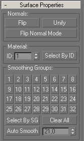

Le lissage des arêtes
Les surfaces d'un objet 3D sont composées de triangles jointifs. Si ces triangles ne sont pas dans un plan unique, les arêtes qui les séparent deviennent visibles. La cause en revient à l'ombrage de Gouraud qui calcule la lumière réfléchie par chaque polygone par rapport à une source de lumière.
Voici un objet composé de quatres faces quadrangulaires. Les arêtes sont visibles bien que l'ensemble de l'objet ait une couleur uniforme.
C'est parce que les sommets présentent plusieurs normales différentes. Puisque l'ombrage de Gouraud dépend de l'angle entre les directions de la lumière incidente et la normale, on obtient des couleurs différentes sur chaque polygone.
Lisser une arête revient à associer les polygones jointifs pour qu'une seule normale soit calculée en chaque point. La couleur calculée de part et d'autre de l'arête sera la même, et, par simple illusion d'optique, l'arête s'effacera. Gmax propose 32 Smoothing Groups pour associer les polygones.

Après un Edit Mesh qui nous permet de sélectionner polygone par polygone, on sélectionne le premier et, dans la section Surface properties, on l'affecte au Smoothing Group 1.
On sélectionne la seconde facette et on l'affecte aux Smoothing Groups 1 et 2.
Puisque les deux facettes sont dans le groupe 1, Gmax efface l'arête qui les sépare.
De même, on sélectionne la troisième facette et on l'affecte aux Smoothing Groups 2 et 3.
Enfin, on sélectionne la quatrième facette et on l'affecte au Smoothing Group 3.
Si on affiche à nouveau les normales des points, elles ont toutes été unifiées à l'exception du point entre les première et quatrième facettes qui n'ont pas de Smoothing Group en commun. C'est pourquoi l'arête reste visible.